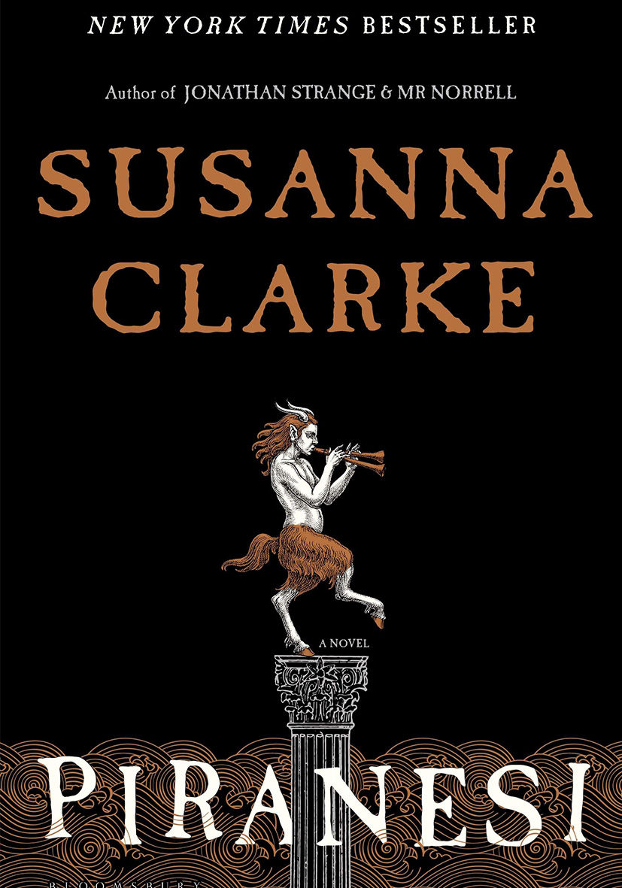

When you want a book that reminds you of spring;
you can enjoy Wait For It by Jenn Mckinlay,
"Wait For It" is a Contemporary Romance novel that published in 2021. The story revolves around a librarian named Stacey is determined to make a fresh start in a new town with her two young sons. As she navigates single parenthood, she finds unexpected support from her quirky neighbors and develops a connection with the local school's handsome and charming coach. The novel explores themes of love, second chances, and the bonds that form in colse-knit communities!
Little Women by Louisa Mayy Alcott,
Little Women is a classic novel written in the 19th century. Set aganist the backdrop of the American Civil War, the story follows the lives of four sisters - Meg, Jo, Beth, Amy March- as they navigate the challenges of adolescence and young adulthood. The novel explores themes of family, love, societal expectations, and personal growth.
or The New Wilderness by Diane Cook!
And The New Wilderness is a dystopian novel published in 2020. Set in a near future world where the environment has been severely degraded, the story follows Bea and her daughter, Agnes, who are part of an experiment to live in the last remaining wilderness area. The novel explores the complexities of human nature and relationships as the characters grapple with the challenges of survival, the impact of technology on nature, and the pursuit of a sustainable way of life.
When you need help out of a reading slump;
Piranesi by Susanna Clarke,
Piranesi" by Susanna Clarke is a fantasy novel published in 2020. The story is centered around the character Piranesi, who inhabits a mysterious and labyrinthine world filled with grand halls and statues. As he explores this surreal environment, he uncovers secrets that challenge his understanding of reality. The novel weaves elements of mystery, fantasy, and philosophical exploration, creating a unique narrative that captivates readers. Susanna Clarke, known for her acclaimed debut novel "Jonathan Strange & Mr Norrell," brings her distinctive storytelling style to "Piranesi," offering readers a thought-provoking and immersive experience.
This is How You Lose the Time War by Amal El-Mohtar & Max Gladstone,
This is How You Lose the Time War is a sci-fi romance book that I personally read and enjoyed very much. There are two time traveler agents that leaves letters behind for each other to find all around in other universes they have in the book. It was amazingly confusing! But the writers are very creative and have lots of book prizes such as the BSFA Award for Best Shorter Fiction, the Nebula Award for Best Novella of 2019, the 2020 Locus Award for Best Novella, the 2020 Hugo Award for Best Novella, the 2020 Prix Aurora Award
and Everything I Never Told You by Celeste NG.
"Everything I Never Told You" is a poignant and gripping family drama that explores themes of identity, race, and the impact of expectations on individuals. The story is set in the 1970s in a small town in Ohio and revolves around the Lee family. It is a Contemporary Fiction novel with Awards: Amazon Book of the Year (2014), Goodreads Choice Award Nominee for Fiction (2014), Alex Award (2015)
When you want raw + beautiful;
You Could Make This Place Beautiful by Maggie Smith
"You Could Make This Place Beautiful" by Maggie Smith is a memoir that offers a poignant exploration of life, loss, and the beauty found within the ordinary moments. Maggie Smith, known for her insightful poetry, turns her lyrical prose toward personal reflections in this memoir. The narrative delves into the author's experiences, capturing the essence of life's joys and sorrows. Through evocative storytelling, Smith invites readers to contemplate the transformative power of resilience and the potential to find beauty even in the midst of life's challenges. The memoir resonates with themes of hope, healing, and the enduring strength of the human spirit.
Games and Rituals by Katherine Heiny
"Games and Rituals" by Katherine Heiny is a collection of short stories that offers a delightful exploration of human relationships and the quirks of everyday life. Known for her witty and observant writing, Heiny brings a blend of humor and poignancy to each story. The collection introduces readers to a diverse array of characters navigating the complexities of love, family, and personal idiosyncrasies. With keen insight, Heiny crafts tales that are both entertaining and emotionally resonant, capturing the nuances of human behavior and the often unpredictable nature of our connections with others. "Games and Rituals" showcases Katherine Heiny's talent for storytelling, delivering a charming and insightful collection that invites readers into the rich tapestry of human experience.

Alone with You in the Ether by Olivie Blake
Alone with You in the Ether is a Contemporary Romance book, our main female character is a museum tour gide and male main charcter is a mathematican. Personally this book is one of my favorites of all time! I just really like the unique way of characters and their writing! While you read, you fell in love with them and with their weird but normal love stroy as well. It just affected me deeply!